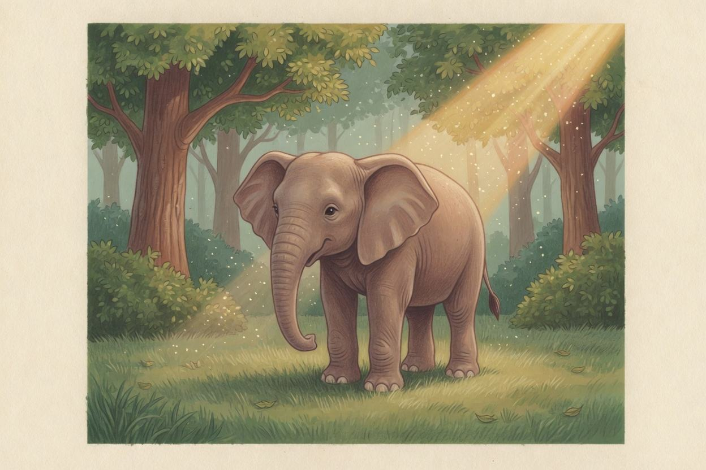

In progress
Stories
Meet the animals and people behind Charlotte’s first stories—from horses at the barn to a baby elephant at the zoo and puppies at home.

Illustrative artwork.
Horse training
Meet horse trainer Martha Wunder
Charlotte is talking with Martha Wunder about working with horses. The story includes her visit to check on Crispy.
Story in progress
Read the story
Illustrative artwork.
The zoo
A baby elephant at the National Zoo
Charlotte visited the National Zoo to see a baby elephant and learn about the people who care for the animals.
Story in progress
Read the story
Illustrative artwork.
At home
Meet the puppies
Three very young puppies at home, growing and playing as they discover what is around them.
Story in progress
Read the story